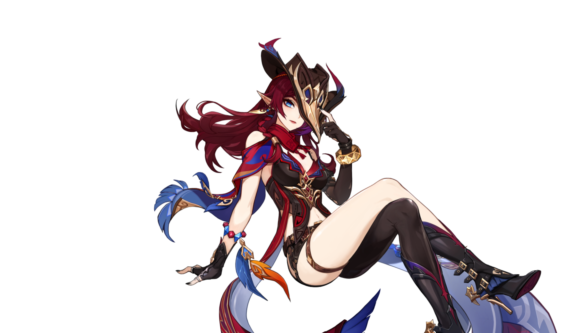

The mediator of Tlalocán, pacifier of a thousand conflicts
The mediator of Tlalocán, pacifier of a thousand conflicts.
A young man of the Nightwind Augurs who lives in nature
with all kinds of living beings.
A cunning and skilled Fontaine magician who always wins
over audiences with his clever tricks and eloquence.